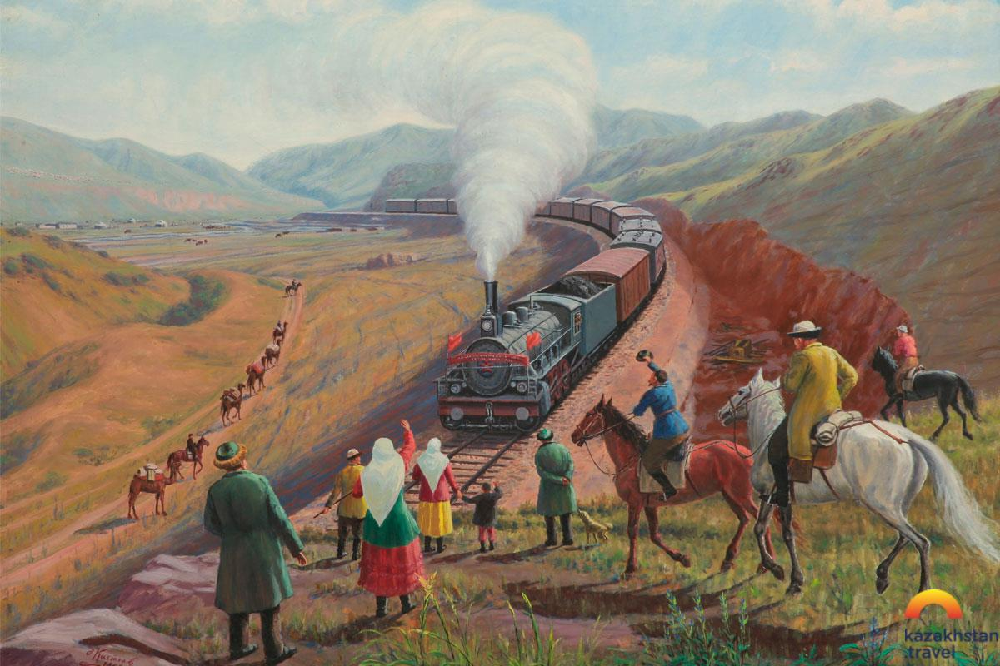
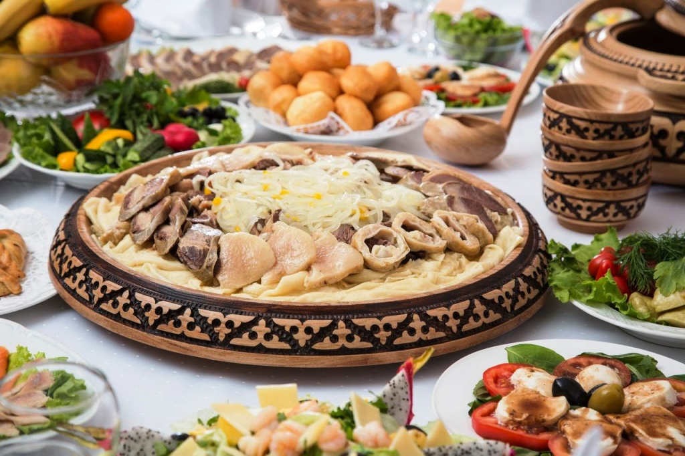

Culture
Before the Russian colonisation, the Kazakhs had a highly developed culture based on their nomadic pastoral economy. Islam was introduced into the region with the arrival of the Arabs in the 8th century. It initially took hold in the southern parts of Turkestan and spread northward. The Samanids helped the religion take root through zealous missionary work. The Golden Horde further propagated Islam amongst the tribes in the region during the 14th century.
Kazakhstan is home to a large number of prominent contributors to literature, science and philosophy: Abay Qunanbayuli, Mukhtar Auezov, Gabit Musirepov, Kanysh Satpayev, Mukhtar Shakhanov, Saken Seyfullin, Jambyl Jabayev, among many others.
Literature
Kazakh literature is defined as "the body of literature, both oral and written, produced in the Kazakh language by the Kazakh people of Central Asia". Kazakh literature expands from the current territory of Kazakhstan, also including the era of Kazakh Soviet Socialist Republic, Kazakh recognised territory under the Russian Empire and the Kazakh Khanate. There is some overlap with several complementary themes, including the literature of Turkic tribes that inhabited Kazakhstan over the course of its history and literature written by ethnic Kazakhs.
The preeminent role in the development of modern literary Kazakh belongs to Abai Qunanbaiuly (Kazakh: Абай Құнанбайұлы, sometimes Russified to Abay Kunanbayev, Абай Кунанбаев) (1845–1904), whose writings did much to preserve Kazakh folk culture. Abai's major work is The Book of Words (Kazakh: қара сөздері, Qara sözderi), a philosophical treatise and collection of poems where he criticises Russian colonial policies and encourages other Kazakhs to embrace education and literacy. The literary magazines Ay Qap (published between 1911 and 1915 in Arabic script) and Qazaq (published between 1913 and 1918) played an important role in the development of the intellectual and political life among early 20th-century Kazakhs.
Fine arts

In Kazakhstan, the fine arts, in the classical sense, have their origins in the second half of the 19th century and the beginning of the 20th century. It was largely influenced by Russian artists, such as Vasily Vereshchagin and Nikolai Khludov, who intensively travelled in Central Asia. Khludov had a particular influence on the development of the local school of painting, becoming the teacher of many local artists. The most famous of these is Abilkhan Kasteyev, after whom the State Museum of Art of Kazakhstan was renamed in 1984.
Cuisine

In the national cuisine, livestock meat, like horse meat and beef can be cooked in a variety of ways and is usually served with a wide assortment of traditional bread products. Refreshments include black tea, often served with milk and dried fruits (such as dried apricots) and nuts. In southern provinces, people often prefer green tea. Traditional milk-derived drinks such as ayran, shubat and kymyz. A traditional Kazakh dinner involves a multitude of appetisers on the table, followed by a soup and one or two main courses such as pilaf and beshbarmak. They also drink their national beverage, which consists of fermented mare's milk.